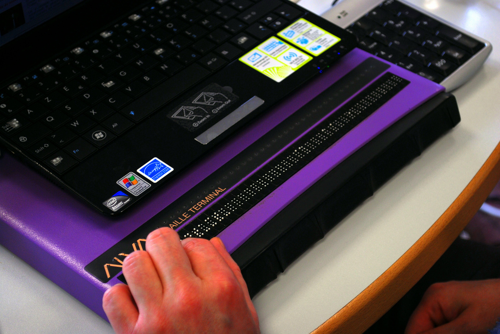

Windows · free · pre-alpha
Hear everything
the screen changes
NamThang reads the accessibility data Windows already publishes, then says where focus is, what happened and what just changed — keyboard first, and alongside NVDA, JAWS or Narrator rather than instead of them.
Status pre-alpha — there is an installer to try, but it is not ready for daily use. Download it from this page or this project's Releases page only; anywhere else is not official.
- Windows 10 / 11
- offline voice by default
- no analytics
- source-available, every line readable
01 — What it is
Built on what the program reports, not on a guess
Programs on Windows already say what is on screen — the name of a control, its role, its state, its position. NamThang reads that through UI Automation and speaks only what changed. When it knows, it says it knows; when it has to guess, it says it guessed.
-
Read from what the program confesses
Name, role, state and position come from the system's accessibility tree, not from guessing at pixels — so it never has to guess what a button is.
-
Fast, and it stops the moment you ask
The target in the plan was under 150 ms from focus change to first sound; the measurement came in at 12.9 ms at p95, and Ctrl cuts the voice at any moment — no waiting for the sentence to end.
-
Alongside a screen reader, not against it
If you already use NVDA or JAWS, keep it. NamThang adds the beat where reading a whole window is too slow, and it does not take your keys.
-
The default is that nothing leaves the machine
Speech is synthesized locally with OneCore. Nothing leaves the machine, there is no analytics, and there is no account to create.
Not finished Planned but not built: command by name, then check the screen really changed · reading test output in a terminal · a bridge into the browser · voice commands · image recognition for apps that expose no accessibility


02 — Measured
From focus to first sound, 12.9 ms
The target set in the plan was under 150 ms. The result sits 11 times inside it, which is the room the next layers need. Every number here comes from a CSV the benchmark wrote itself — none of it is an estimate.
across 222 focus changes
the rest had none from the system
room for the layers above
| Application | Focus changes | Had a name | p50 (ms) | p95 (ms) |
|---|---|---|---|---|
| Chrome | 71 | 97.2% | 7.3 | 10.7 |
| Explorer | 45 | 97.8% | 7.2 | 9.1 |
| Windows Settings | 45 | 97.8% | 6.9 | 11.3 |
| Calculator | 35 | 97.1% | 7.2 | 9.5 |
| Claude (Electron) | 26 | 96.2% | 8.2 | 22.6 |
| All five | 222 | 97.3% | 7.2 | 12.9 |
Not measured: audible onset (that needs a loopback capture) · VS Code and Notepad could not be measured in that run · about 2% of focus events the system never delivered, found by polling alongside Read the full report
03 — Keys that work today
The keys, and you are using it
There is no menu to hunt through. Everything is on the keyboard, and every key works while focus sits in another program. If another program already owns a key, NamThang says aloud that it could not register it instead of going silent.
- Ctrl
- Cuts the voice immediately — press once while it is speaking; it carries on from there, no waiting for the sentence to end.
- Ctrl + Alt + W
- Where am I — says the window and where focus sits right now.
- Ctrl + Alt + ↓ / ↑
- Next / previous item — walks the window that has focus, one item at a time.
- Ctrl + Alt + H
- Next heading — jumps over body text, heading by heading.
- Ctrl + Alt + K / B / E
- Next link / button / field — by the kind of control you are looking for.
- Ctrl + Alt + A
- Read on — reads from here to the end of the window.
- Ctrl + Alt + V
- Speech history — replays the last ten lines that were spoken.
- Ctrl + Alt + F1
- Keyboard help — names every key you press; press again to stop.
- Ctrl + Alt + S
- Stop (backup key) — if another program owns it, you hear that it could not be registered.
- Ctrl + Alt + Q
- Quit — nothing is left running on the machine.
The reading keys move a reading position, not your focus — nothing is clicked or typed for you, so the program you are in keeps working normally.
04 — Limits
What it cannot do yet
An assistive tool that lies about its own limits is a dangerous tool. This is what NamThang does not do, as of today.
- There is no version to rely on yet It is pre-alpha and has not been tested widely with real users.
- It cannot reach the Windows sign-in screen or UAC Those two need the system screen reader, because ordinary programs are locked out of them on purpose.
- Games and apps that expose no accessibility They need image recognition, which can be wrong, and the result is tagged “guess” so you know what you are hearing.
- Windows only There are no plans for Linux or macOS.
- Not everything is measured VS Code and Notepad could not be measured in the last run, and the ~2% of focus events the system never delivers need thousands more samples.
- Planned work is not here Command by name, then checking the screen really changed · reading test output in a terminal · a bridge into the browser · voice commands · image recognition for apps that expose no accessibility.
05 — Privacy
By default, nothing leaves the machine
Speech is synthesized on the machine by Windows OneCore — no connection, no account, and no analytics inside the program.
If you turn on the online voice yourself, the settings window says plainly which text goes where, and you can turn it off again at any time. Nothing is switched on quietly.
This page has no tracker either: no cookies, no analytics calls.
06 — Install
Installing takes a few minutes
One installer file. It installs for the current user, needs no administrator rights, and needs no .NET install because the speech engine ships inside it.
-
Download
Press the download button for one file, NamThang-0.1.0-setup.exe, 111.8 MB. Anywhere else is not official.
-
Install
Double-click and follow the window; about a minute, and no restart. If Windows protected your PC appears, choose More info, then Run anyway — the file is not code-signed yet.
-
Start
Open it from the Start menu. If NVDA is running, close it first so the two voices do not overlap, then press Ctrl + Alt + W to hear where you are · Ctrl stops speech · Ctrl + Alt + Q quits.
07 — What we promise
Free forever, every line readable
No paid edition, no feature held back for sale, and nothing you cannot check for yourself. The full legal text is in the LICENSE file.
-
Free for everyone
A blind user pays nothing, and there will be no paid edition later.
-
The whole code is readable
Read every line to study, check or learn from it — source-available, not open source by the usual definition.
-
Share it on, never sell it
A foundation, a school or an agency may pass on the unmodified official build.
-
No resale, no rebranding
It may not be bundled into a paid product, redistributed modified, or have the author's name removed.